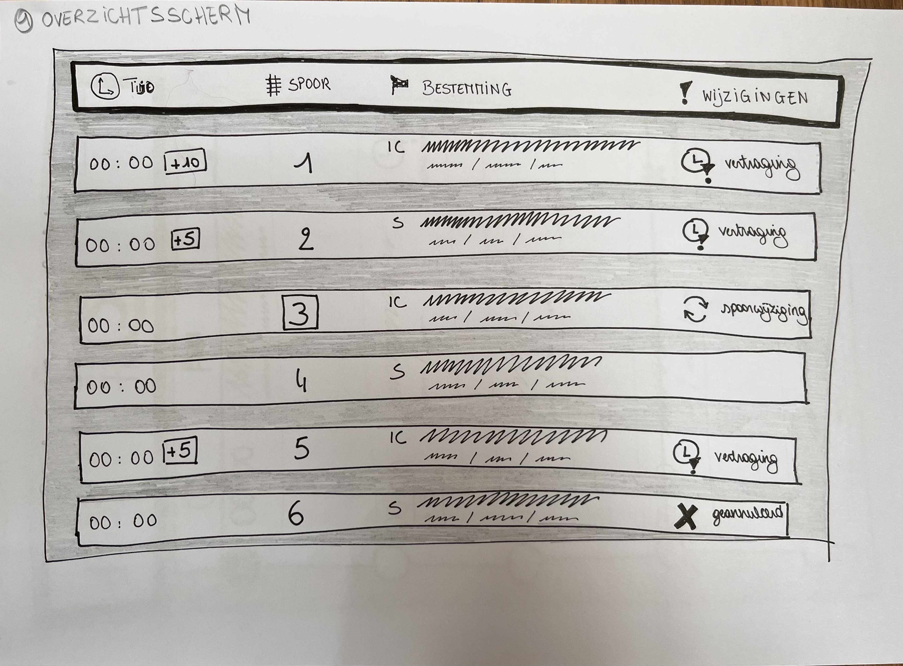
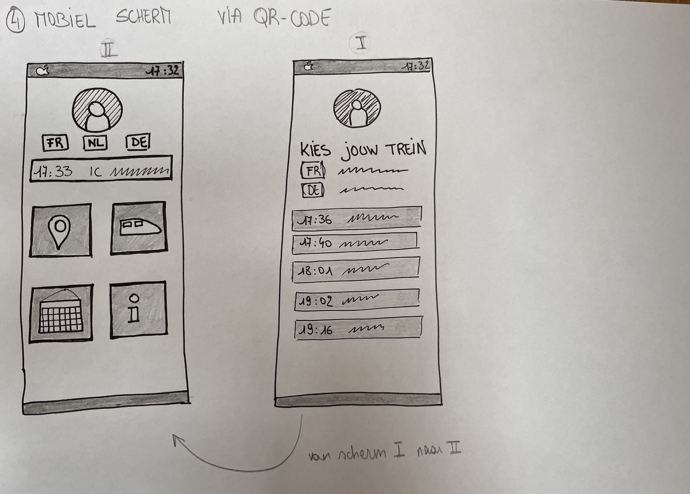
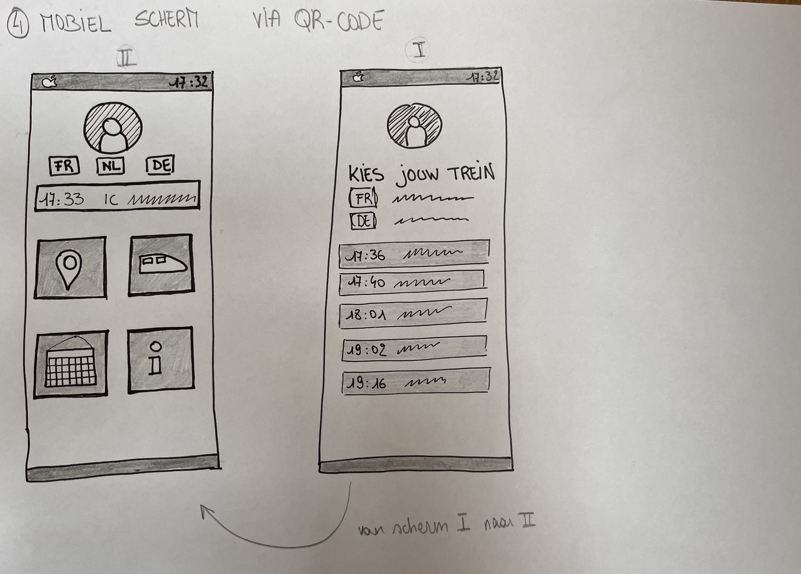
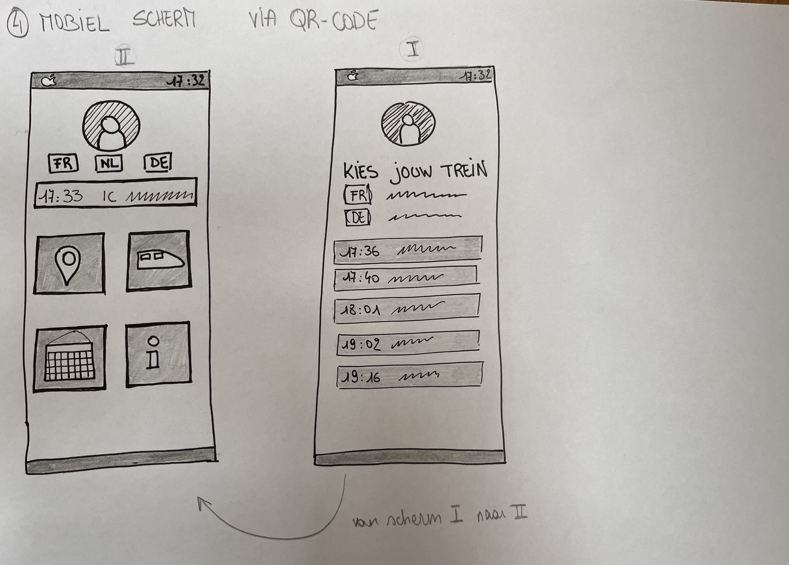

Deze week heb ik mijn low-fi prototypes herwerkt en verbeterd. Ook heb ik deze omgezet naar mid-fi prototypes in Figma.
Feedback & Herwerken low-fi prototypes
Ik heb mijn low-fi schermen opnieuw getekend.
Meer structuur aangebracht door gebruik van verschillende grijs-/zwarttinten.
Verschillende diktes van lijnen gebruikt voor meer duidelijkheid.


Mid-fi prototypes in Figma
Mijn low-fi prototypes heb ik omgezet naar mid-fi prototypes in Figma.
Ik heb kleuren toegevoegd voor meer duidelijkheid. Bvb: rood → alarmerend, trekt de aandacht (vertraging, geannuleerde trein)
Het gebruik van pictogrammen is begrijpbaar in verschillende talen.
FR/DE/ENG-vertalingen van plaatsnamen zijn kleiner en eronder geschreven.
De actuele tijd en spoor staan groot want dit zijn 2 belangrijke items.
QR-code op derde scherm verwijst door voor meer informatie.
Wagonindeling met zones die ook op het perron zelf worden aangegeven. Bvb: Zone A, Zone B,… → zo weten reizigers, fietsers, rolstoelgebruikers waar ze moeten wachten op het perron om in de juiste wagon te stappen.

 
